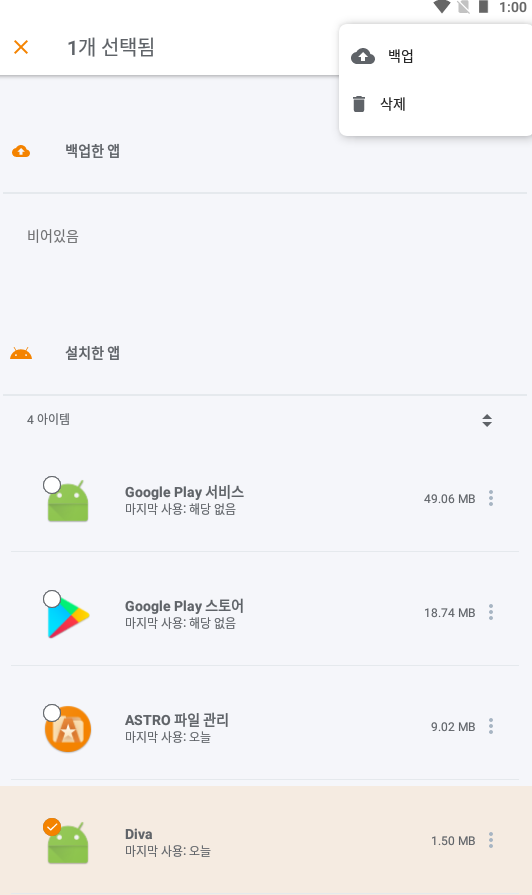

APK 추출
백업 기능을 이용해서 추출
ASTRO 파일 관리자 설치
https://drive.google.com/file/d/1DWBTDjP1HQDAGszkn5fvNkzj0RP0xKnd/view?usp=sharing
앱 > 추출할 앱 선택(쭉) > 백업

$ adb shell
$ cd /sdcard/backups/apps -> 백업된 앱 경로 및 파일명 확인
$ adb pull /sdcard/backups/apps/jakhar.aseem.diva.apk


ARM 이란?
CISC vs RISC
Advanced RISC Machine의 약자 CPU TYPE

ARM 모드 / Thumb 모드Í
- ARM 과 x86 의 가장 큰 차이점은 Thumb 모드가 있다는 것
- THUMB 모드는 32bit ARM에서 동작하는 16bit 기계어
ARM 모드 ←→ Thumb 모드
BLX / BX 등 X로 끝나는 분기문 명령으로 모드 전환